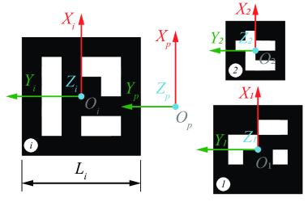
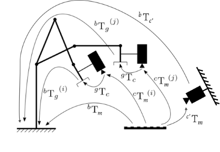
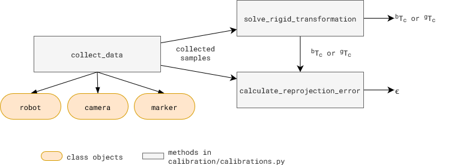

Robot-Camera Calibration
There are two types of robot-camera calibration:
eye-on-base: camera is mounted on a fixed base
eye-on-hand: camera is mounted on the robot
Method: eye-on-base

Known Value(s) |
Collected Samples |
Unknown Value(s) |
|---|---|---|
\(^gT_m\) |
\(^bT_g^{(i)}, ^cT_m^{(i)}\) |
\(^bT_c\) |
Given a setup of camera on fixed base, the procedure to calibrate the robot-camera system is as follows:
Mount a marker on the robot end effector.
Estimate \(^gT_m\), the transformation matrix marker to gripper. \ This value is determined from CAD reference (preferred) or measuring the marker center from end effector frame. If using ArUco marker, the marker center is the origin of the marker frame. 
Collect samples of \(^bT_g^{(i)}\) and \(^cT_m^{(i)}\).
Each sample is collected by moving the robot to a new pose and capturing the image of the marker. The pose of the marker in the image is used to estimate \(^cT_m^{(i)}\). The pose of the robot end effector is used to estimate \(^bT_g^{(i)}\).Estimate \(^bT_c\), the transformation matrix base to camera using suitable algorithm as discussed in section below. Following are the inputs to solve \(^bT_c\)
\(^bT_m^{(i)} \mid i = 1...n\): Transformation matrix marker to robot base. \(^bT_m^{(i)} = {^bT_g^{(i)}} \cdot {^gT_m} \)
\(^cT_m^{(i)} \mid i = 1...n\): Transformation matrix marker to camera.
Validate the calibration by checking the reprojection error, \(\epsilon\).
Method: eye-on-hand

Known Value(s) |
Collected Samples |
Unknown Value(s) |
|---|---|---|
\(^bT_{c'}\) |
\(^bT_g^{(i)}, ^cT_m^{(i)}\) |
\(^gT_c\) |
In this setup, we use one of the calibrated cameras fixed on base to calibrate a camera mounted on the robot end effector. The method is similar to eye-on-base calibration.
Put a marker such that it is fixed w.r.t. the robot base, and in view of both cameras (\(c'\) and \(c\)).
Using the eye-on-base calibration, we get \(^bT_m = {^bT_{c'}}\cdot{^{c'}T_m}\). The eye-on-base camera takes a picture of the marker and estimates \(^{c'}T_m\).
Collect samples of \(^bT_g^{(i)}\) and \(^cT_m^{(i)}\).
Each sample is collected by moving the robot to a new pose and capturing the image of the marker. The pose of the marker in the image is used to estimate \(^cT_m^{(i)}\). The pose of the robot end effector is used to estimate \(^bT_g^{(i)}\).Estimate \(^gT_c\), the transformation matrix base to camera using suitable algorithm as discussed in section below. Following are the inputs to solve \(^gT_c\)
\(^gT_m^{(i)} \mid i = 1...n\): Transformation matrix marker to robot gripper. \(^gT_m^{(i)} = {(^bT_g^{(i)})^{-1}} \cdot {^bT_m} \)
\(^cT_m^{(i)} \mid i = 1...n\): Transformation matrix marker to camera.
Validate the calibration by checking the reprojection error, \(\epsilon\).
Code Overview

All the calibration related methods in above figure are in calibration/calibration.py.
To collect samples, collect_data method takes three class objects as input: robot, camera, and marker. Each new robot type, camera type, or marker type needs its own class. Use existing classes as examples to create a new one, if needed.
robotclasses are in /robot foldercameraclasses are in /camera foldermarkerclasses are in /calibration/marker folder
Usage: Scripts, scripts/robot_camera_calibration.py and scripts/gripper_camera_calibration.py can be used to execute the calibration method discussed above and show in the figure.
Try it out
…todo…
Useful Tips
Sample Collection: Samples with high rotational variance and low translational variance have better calibration results. Adjust that in
calibartions.pyfile.Reprojection Error: A low reprojection error indicates a good calibration. Error value <2mm is considered good.
Calibration Algorithms
The calibration algorithms implemented in calibration/calibrations.py under solve_rigid_transformation method. [code ref]
One Sample Estimate
ONE_SAMPLE_ESTIMATE
Calculate the following for each sample, and select the one with the best average reprojection error for the set.
Kabsch-Umeyama algorithm
SVD_ALGEBRAIC
The algorithm calculates the optimal rotation matrix that minimizes the root mean squared deviation between two paired sets of points [1].OpenCV Approach 1: Rotation then Translation
CALIB_HAND_EYE_TSAICALIB_HAND_EYE_PARK
In this approach, OpenCV provides the following methods to first estimate the rotation and then the translation (separable solutions):OpenCV Approach 2: Simultaneous rotation and translation
CALIB_HAND_EYE_ANDREFF
Another approach consists of estimating simultaneously the rotation and the translation (simultaneous solutions), with the following implemented methods:
References
Lawrence, 2019. Purely Kabsch-Umeyama Algorithm.
Tsai, R., Lenz, R., 1989. A New Technique for Fully Autonomous and Efficient 3D Robotics Hand/Eye Calibration.
Park, F., Martin, B., 1994. Robot Sensor Calibration: Solving AX = XB on the Euclidean Group.
Horaud, R., Dornaika, F., 1995. Hand-Eye Calibration.
Andreff, N., Horaud, R., Espiau, B., 1999. On-line Hand-Eye Calibration.
Daniilidis, K., 1999. Hand-Eye Calibration Using Dual Quaternions.